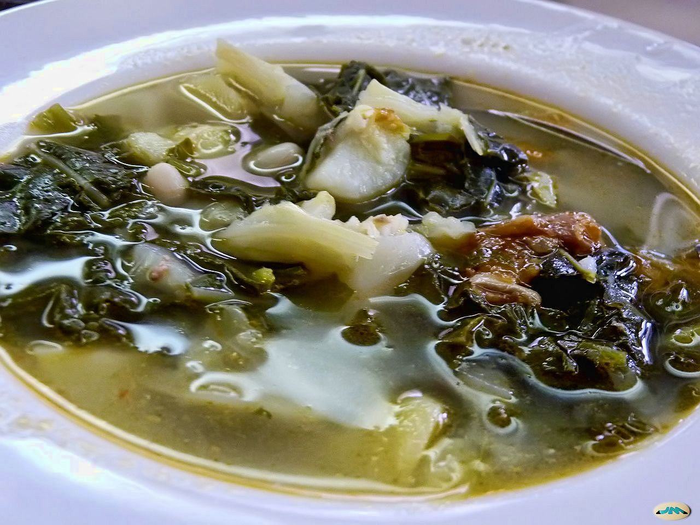
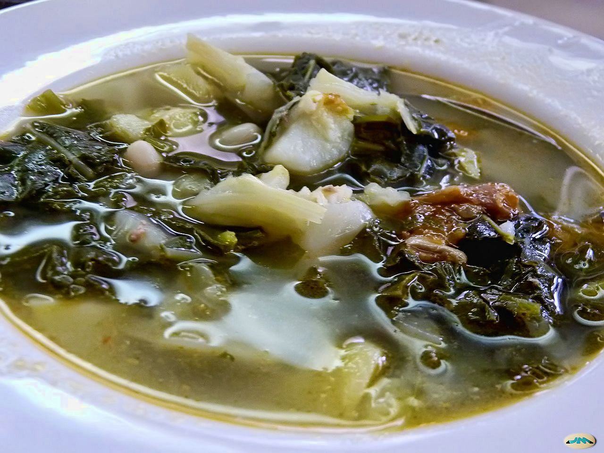

La gastronomía de Galicia es una de las más famosas de todo el país, se caracteriza por un producto de calidad muy variado. La cocina gallega está basada en un producto de excelente calidad que la convierte en una de las más sabrosas del país.
Estos son tres de los platos más famosos.